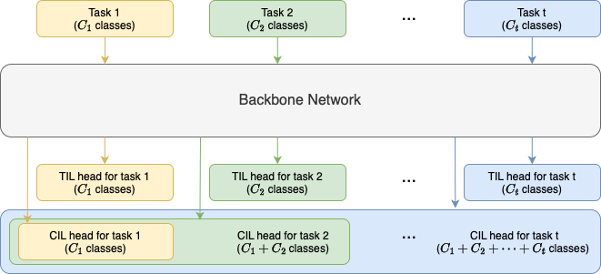
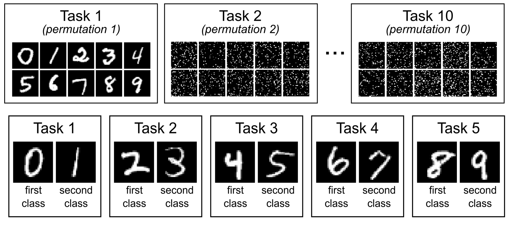
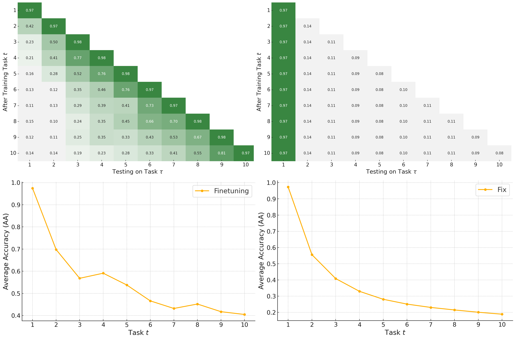
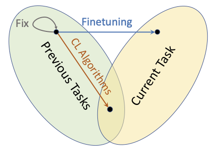

Learning with Non-Stationary Streaming Data: A Beginner’s Guide to Continual Learning
Continual Learning Classification and Formal Definitions
Formal Definition of Continual Learning Classification
In continual learning classification problem, we have:
- Tasks: \(t=1,2,\cdots\)
- Training data of tasks: \(\mathcal{D}_{\text{train}}^{(t)}=\{(\mathbf{x}_i,y_i)\}_{i=1}^{N_t} \in (\mathcal{X}^{(t)},\mathcal{Y}^{(t)})\)
- Testing data of tasks as well: \(\mathcal{D}_{\text{test}}^{(t)} \in (\mathcal{X}^{(t)},\mathcal{Y}^{(t)})\)
We aim to develop an algorithm which trains the model \(f^{(t-1)}\) to \(f^{(t)}\) at the time for task \(t\):
- With access to \(\mathcal{D}_{\text{train}}^{(t)}\) only
- To perform well on all seen tasks \(\mathcal{D}_{\text{test}}^{(1)}, \cdots, \mathcal{D}_{\text{test}}^{(t)}\)
The Multi-head Classifier
CL Model = Backbone Network + Multi-head Classifier
Multi-head classifier
- Output heads assigned to different tasks
- A head = simply a linear output layer outputing logits of classes
- New head is initialised and trained along with backbone as new task come in
The Multi-head Classifier

TIL vs CIL
Task-Incremental Learning (TIL)
- Known task ID during testing: \((\mathbf{x}, y, t)\in (\mathcal{X}^{(t)},\mathcal{Y}^{(t)})\)
- Output heads are segregated, without considering other tasks
- A-level analogy: separately conducted exams, students know which subject is tested on.
Class-Incremental Learning (CIL)
- Classes from all tasks to predict from: \((\mathbf{x}, y) \in (\mathcal{X}^{(1)}\cup \cdots\cup \mathcal{X}^{(t)},\mathcal{Y}^{(1)}\cup \cdots\cup \mathcal{Y}^{(t)})\), without known task ID
- Incremental evolving output heads
- A-level analogy: one crazily huge exam including and mixing all subjects
- Much more difficult than TIL!
TIL vs CIL
More paradigms:
- Task-agnostic testing: TIL without known test ID. the model has to figure out the test ID by itself
- Task-agnostic continual learning: eliminate the task boundary
The Challenges: From Examples of the Baseline Algorithms
Logistics
- 2 naive baseline algorithms
- Evaluated on a simple 10-task CL dataset
- Analyse the results and introduce the challenges faced by CL
Before that, I give a tour around:
- Where to evaluate the algorithms: the construction of CL datasets
- How to evaluate the algorithms: the metrics that CL cares about
How to Construct CL Dataset: Permute, Split, Combine
Combine
- From different sources of ML datasets, each serving as a task
- Be aware varied input dimensions
- E.g.,
Constructed from one dataset:
- Permute: permute image pixels in the original dataset under a same certain way to get for a task
- Split: split the original dataset by group of classess to form subsets for different tasks
How to Construct CL Dataset: Permute, Split, Combine

Metrics: What CL Cares About
The lower triangular matrix: the main result
\[ \begin{array}{cccc} a_{1,1} & & & \cdots \\ a_{2,1} & a_{2,2} & & \cdots \\ a_{3,1} & a_{3,2} & a_{3,3} & \cdots \\ \vdots & \vdots & \vdots & \ddots \\ \end{array} \]
- \(a_{t,\tau}\): the accuracy of \(f^{(t)}\) after training task \(t\), testing on task \(\tau\) testset \(\mathcal{D}_{\text{test}}^{(\tau)}\)
Average Accuracy (AA)
\[\mathrm{AA}_t=\frac{1}{t} \sum_{\tau=1}^t a_{t,\tau}\]
- The main performance metric to make effort to improve
Metrics: What CL Cares About
Backward Transfer (BWT) \[ \mathrm{BWT}_t=\frac{1}{t-1} \sum_{\tau=1}^{t-1}\left(a_{t,\tau}-a_{\tau, \tau}\right) \]
- Forgetting measure: summed up drop in performance on previously learned tasks
- Stability measure: how stable the model changed after training new tasks
Forward Transfer (FWT) \[ \mathrm{FWT}_t=\frac{1}{t-1} \sum_{\tau=2}^t\left(a_{\tau, \tau}-a^I_\tau\right) \]
- \(a^I_\tau\): the performance of reference model, trained with task \(\tau\) alone
- CL could have achieved better performance as reference model without considering preventing forgetting on previous tasks
- Plasticity measure: summed up difference from reference model – the most plausible model
Finetuning and Fix: the Baselines
Two naive baselines for continual learning paradigm:
Finetuning (or SGD)
- Simply initialise from the model learned from last task
- Take no action to prevent forgetting, let it go
Fix
- Fix the model from being updated after training first task
- The other way around which tries to fully prevent forgetting
Finetuning and Fix: the Baselines

Challenge 1: Catastrophic Forgetting
Catastrophic Forgetting
- Previous knowledge can hardly be preserved within neural networks after convergence to a different data distribution
- Finetuning suffers the most
- The main problem that most CL alogirthms make effort to address
In CIL, forgetting is even more catastrophic because of the lack of negative examples, which shows CIL is much more difficult than TIL.
However, CL is not all about catastrophic forgetting. It is just one side of the coin.
Challenge 2: Stability-Plasticity Dilemma
The Problem of the Other Extreme
- Fully prevent forgetting = promote too much stability \(\rightarrow\) completely lose plasticity
- As we can see in the extreme effort of Fix, both two extremes lead to bad average performance

Stability-Plasticity Dilemma
- The model cannot achieve both stability and plasticity at the same time
- CL algorithms have to trade-off the balance of stability-plasticity
Challenge 3: Network Capacity
Network Capacity Problem
- Any fixed model will eventually get full as infinite tasks arrive
- Cannot select a proper-sized network beforehand under the infinte task assumption
The network: fixed or expanded?
Independent Learning
- A prohibited way to do continual learning
- Fully expanded network capacity, causing linear increasing model memory cost
- Achieve the best performance as the reference models. Not fair!
The metrics taking into account model memory cost?
Classic Methodology
Replay-based Approaches
- In CL definition: no access to the previous data
- Mainly due to a data memory issue
- Still allow storing a small amount of previous data
Replay-based Approaches:
- Store a small amount of representations of previous data
- Try to mimic the previous task distribution
- Leverage them by replay mechanisms
Two steps for Replayed Data:
- Sampling:
- Manually select by certain importance measure
- Generated by generative model (pseudo replay)
- Some samples features to store (feature replay)
- Utilizing:
- Replayed data are not enough to be mixed and trained with new data
- Mechanism like knowledge distillation, optimization constraints
The metrics taking into account data memory cost?
Regularisation-based Approaches
Regularisation-based Approaches
- Add regularisation for preventing forgetting to loss function:
\[ \min_\theta \mathcal{L}^{(t)}(\theta) = \mathcal{L}^{(t)}_{\text{cls}}(\theta) + \lambda R(\theta) \]
\[\mathcal{L}^{(t)}_{\text{cls}}(\theta) = \sum_{(\mathbf{x}, y)\in \mathcal{D}^{(t)}_{\text{train}}} l(f(\mathbf{x}; \theta), y)\]
- Regularisation parameter \(\lambda\): hyperparameter, controlling the intensity of preventing forgetting, or the scale to balance stability-plasticity trade-off
Regularisation-based Approaches
Weight Regularisation
- The naive way:
\[ R(\theta) = \sum_{i} \left(\theta_i - \theta_i^{(t-1)}\right)^2 = \|\theta - \theta^{(t-1)}\|^2 \]
- With parameter importance:
\[ R(\theta) = \sum_{i} \omega_i \left(\theta_i - \theta_i^{(t-1)}\right)^2 \]
- In EWC, 2017: \[\omega_i = F_i =\frac{1}{N_t} \sum_{(\mathbf{x}, y)\in \mathcal{D}^{(t-1)}_{\text{train}}} \left[\frac{\partial l(f^{(t-1)}\left(\mathbf{x}, \theta), y\right)}{\partial \theta_i}\right]^2\]
Regularisation-based Approaches
Feature Regularisation
- Implicitly regularise the parameters by constraining features
- The naive way (LwF, 2016):
\[R_{\text{LWF}}(\theta) = \sum_{(\mathbf{x}, y)\in \mathcal{D}^{(t)}_{\text{train}}} l(f(\mathbf{x};\theta),f(\mathbf{x};\theta^{(t-1)})) \]
Architecture-based Approaches
Architecture-based Approaches
- A distintly different strategy that decomposes the network
- Dedicate different parts of a neural network to different tasks
- Minimize the inter-task interference
- Leverages the separability characteristic of the neural network architecture
How to define “parts”:
- Modular Networks: play around network modules like layers, blocks
- Parameter Allocation: allocate group of parameters or neurons to task as asubnet
- Model Decomposition: decompose network from various aspects into sharedand task-specific components
Challenges:
- Network capacity becomes explicit
- Tend to fix part of model for previous tasks, stress stability, lack plasticity
Architecture-based Approaches

Progressive Networks, 2016
- Expand the network with new column module for each new task
- Linearly increasing model memory
- Similar to independent training: train a independent network for each task
Architecture-based Approaches
HAT (Hard Attention to the Task), 2018
- Masks and parameters are both learnable
- Fix masked parameters once trained until testing using the subnet
- Sparsity regularization for masks
AdaHAT, 2024 (my work)
- Allow minor adaptive adjustment to masked parameters
Architecture-based Approaches
ACL (Adversarial Continual Learning), 2020
- Shared and task-specific, modules, features
- Shared module is adversarially trained with the discriminator to generate task-invariant features. The discriminator predicts task labels

Optimization-based Approaches
Optimization-based Approaches
- Explicitly design and manipulate the optimization step
- Often involves direct modification of the gradients
Orthogonal gradients projection:
- Project the gradient \(g\) to the direction \(g'\) orthogonal to the previous space
- Prevent interfering previous tasks in the gradient descent level
The orthogonal projection: Gram-Schmidt formulas
\[ u_1 = v_1,\ u_k = v_k - \sum_{i=1}^{k-1} \text{proj}{u_i}(v_k),\ \text{proj}{u_i}(v_k) = \frac{v_k \cdot u_i}{u_i \cdot u_i} u_i \]
New Trends in Continual Learning
Continual Learning + Self-Supervised Learning
Self-Supervised Learning (SSL)
- Can help models learn more generalized representations, essential for continual learning to prevent forgetting
- E.g.
Contrastive Learning
- Contrastive loss encourages similar representations for samples considered similar, distinct representations for samples regarded as contrasting
- E.g.
Continual Learning + Pre-trained Models
Finetuning for downstream continual learning
- Become popular along with per-trained models like Transformer, BERT
- Shared = pre-trained model, task-specific = finetuning for each task in CL
Prompt-based continual learning
- Prompt doesn’t need updating parameters, solves the problem of cost to finetune
- Become popular along with larger pre-trained models like GPT
- Shared = pre-trained model, task-specific = prompts for each task in CL
- E.g.
- Select the most relevant prompts from a pool}
- Instance-wise query mechanism to retrieve prompt, task-agnostic}
Continual Pre-Training (CPT)
- Solve the continual learning problem of pre-training model itself
Other Trends
Extended Paradigms:
- Few-Shot Continual Learning (FSCL)
- Unsupervised Continual Learning (UCL)
- Online Continual Learning (OCL)
Thank You
Thank you for your attention!
Please feel free to ask any questions or reach out to me at: